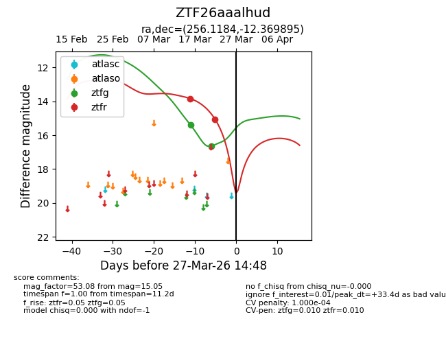
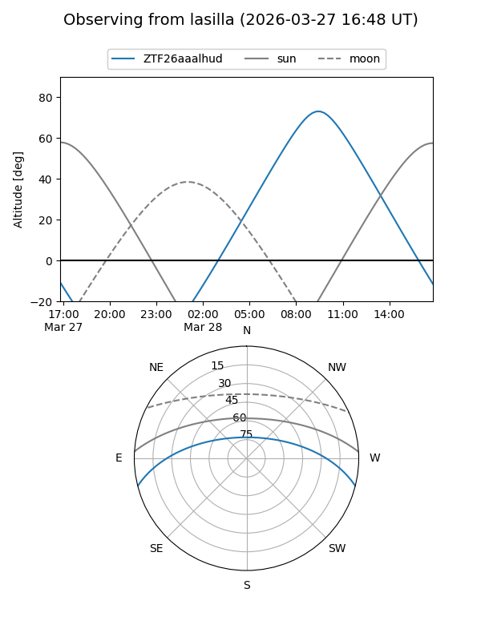
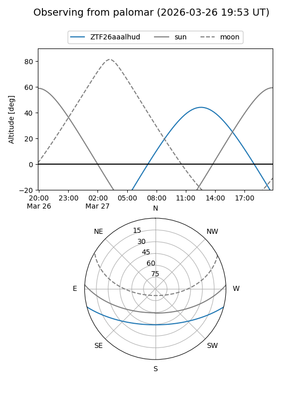
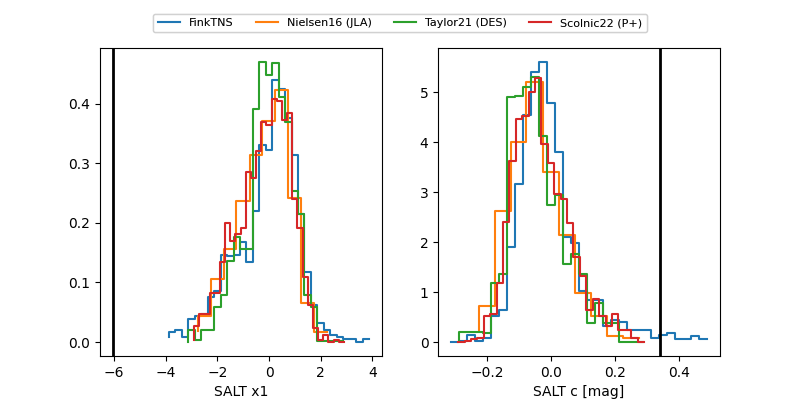

ZTF26aaalhud
Target ZTF26aaalhud at 2026-03-27 14:51
Aliases and brokers:
FINK: link
Lasair: link
ALeRCE: link
alt names
ZTF26aaalhud (ztf,fink_ztf)
Coordinates:
equatorial (ra, dec) = 256.1184,-12.36989
equatorial (HMS+DMS) = 17:04:28.41,-12:22:11.62
galactic (l, b) = (8.7849,+17.06642)
Flags:
likely cv
Photometry:
last ztfg=16.66, ztfr=15.05
2 ztfg, 2 ztfr detections
Lightcurve

Visibility


Additional plots
